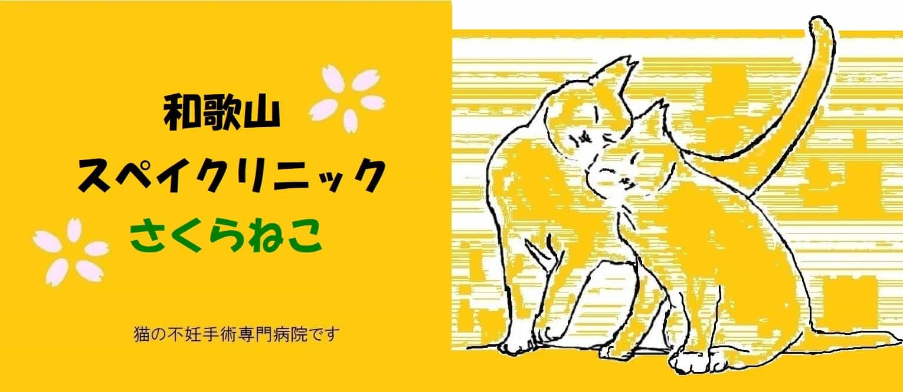

アクセス
〒640-8324
和歌山県和歌山市吹屋町４丁目９−１
※ 木広町の交差点からは道幅が狭く、入りにくいのでご注意下さい


※ 当院は猫の不妊手術専門病院です。一般の診療は行っておりません。
当日ご予約無しでの手術は割増料金が発生します。→「手術の流れと注意点」をご参照下さい。
一般診療のほか、ワクチン接種、ウイルス検査、ノミダニ駆除なども承っております。手術と同時に行うことも可能ですので、お気軽にご相談ください。
※ 手術料金には、ノミ駆虫薬、化膿止めの抗生剤 及び、術後の 皮下補液 も含まれております。(一部例外)
★ 耳カット(耳先のＶ字カット)は不妊去勢手術を受けた証
もう子猫を増やすことはありません。
手術中（主に午前中～昼くらい）の為、電話に出られない事があります。
ご予約・ご用件のメッセージを留守番電話にお伝え下さい。
なるべく折り返す様に致しますが、連絡が無い場合、再度ご連絡お願い申し上げます。
※ お電話は上記の通り、午前中は主に留守番電話に切り替わる事が多いです。
5/5(火)～5/11(月)まで休診いたします。ご了承下さい。
〒640-8324
和歌山県和歌山市吹屋町４丁目９−１
※ 木広町の交差点からは道幅が狭く、入りにくいのでご注意下さい